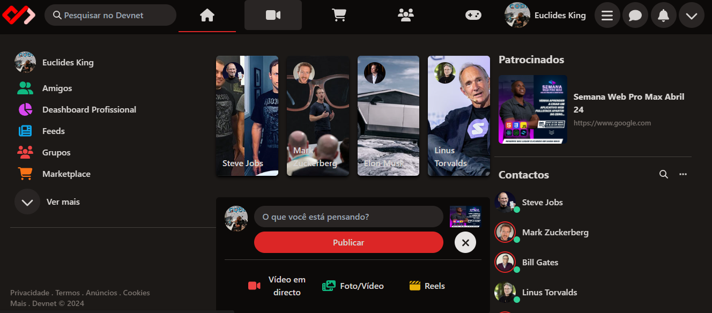

Projectos
Fazenda Belo Sol
2025
.png)
Projecto criado no ambito de apresentação na Jornada Científica-Pedagógica "OpenDay" - Universidade Independente de Angola, consiste em um site para uma fazenda "fictícia" onde constam algumas informações sobre a mesma. E o seu diferêncial está na possibilidade de investir em seus produtos.
Portal de Notícias UnIA
2025
.png)
O Portal de Notícias UNIA é o espaço oficial de comunicação e divulgação de conteúdos informativos, académicos e culturais. Criado com o propósito de conectar estudantes, docentes, investigadores e a sociedade em geral. Podendo reunir notícias, artigos científicos, projetos estudantis, entrevistas, entre outros conteúdos relevantes que nascem dentro da nossa universidade.
Site IMEAS
2025
O Sistema tem como principal objetivo atender às necessidades administrativas e de comunicação da igreja. A solução busca organizar informações essenciais, fortalecer o engajamento da comunidade e centralizar conteúdos espirituais, facilitando o acesso por parte de líderes e membros.
Insónia
2025
.png)
Insónia é uma empresa de vendas virtual, criada em 2023, atualmente conta mais de 00 clientes frequentes e mais de 00 productos a disposição dos nossos clientes. Cadastra-se, torna-se nosso cliente e faça parte da nossa história! O projecto serviu de prática durante o estágio de Programação Web.
Hora
2024
.png)
Projecto criando com objectivo de prática da linguagem de programação JavaScript, consiste em a hora, minuto e segundos baseando-se na hora do sistema.
Cálculo de Idade
2024
.png)
Projecto criando com objectivo de prática da linguagem de programação JavaScript, consiste em receber o ano de nascimento e sexo, retornar a idade e uma foto consoante a idade mostrada.
Clone Facebook
2024
Projecto criado durante a imersão de Desenvolvimento Web Fullstack, consiste na recriação da página inicial do Facebook, de modo a aprender sobre tecnologias e conseitos utilizados no desenvolvimento Web.